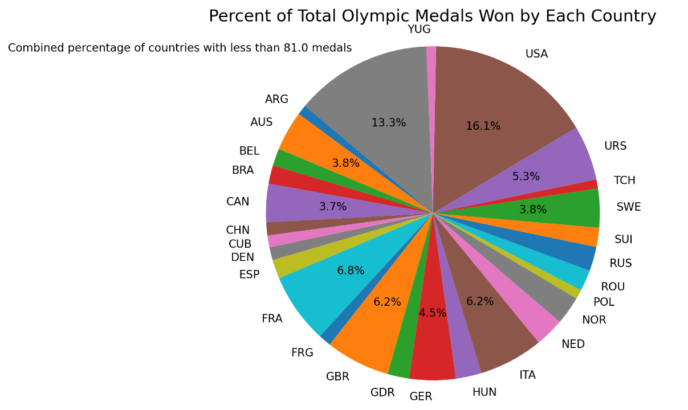

Projects
EditTree Text Editor Data Structure
Java
- Collaborated with a partner to implement a height-balanced tree supporting efficient text-editor operations
- Developed insertion, deletion, indexed access, and tree-rebalancing algorithms using ranks, balance codes, and rotations to achieve O(log n) runtime for core operations

GraphSurfing
Java
- Implemented generic adjacency-list and adjacency-matrix graph structures with edge operations, neighbor queries, and lazy iterators
- Developed shortest-path and strongly connected component algorithms and applied them to a Wikipedia graph with 700,000+ vertices and 3.6M+ edges
Maze with Zombies and Collectibles Game
Java
- Collaborated in a four-person team to develop a tile-based Java maze game with player/enemy movement, collision detection, collectibles, and multiple levels
- Designed an extensible game and level-layout structure to simplify creation of new levels; developed movement functionality and used UML to support object-oriented design
Olympic Data Analysis & Visualization
Python
- Developed a Python program to clean and analyze Olympic data, handling repeated records and missing values through filtering and data organization
- Calculated summary statistics and created Matplotlib visualizations to identify and communicate trends within the dataset
